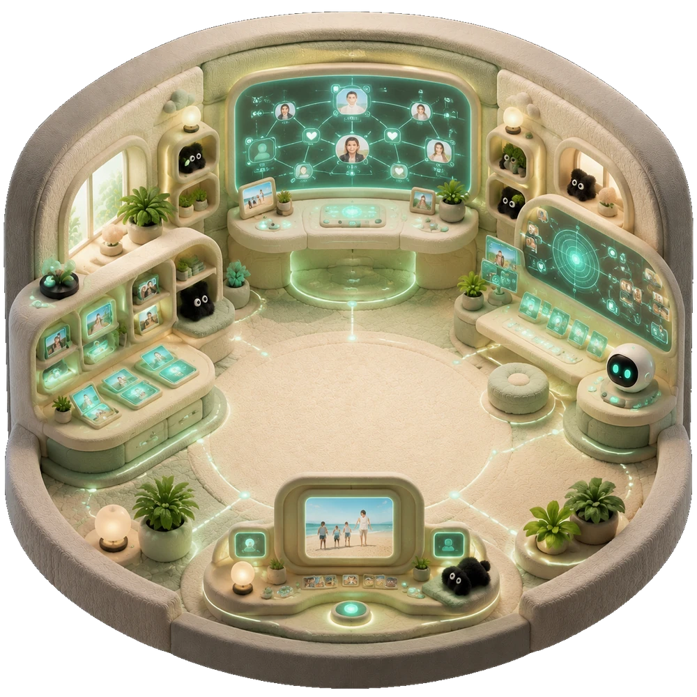
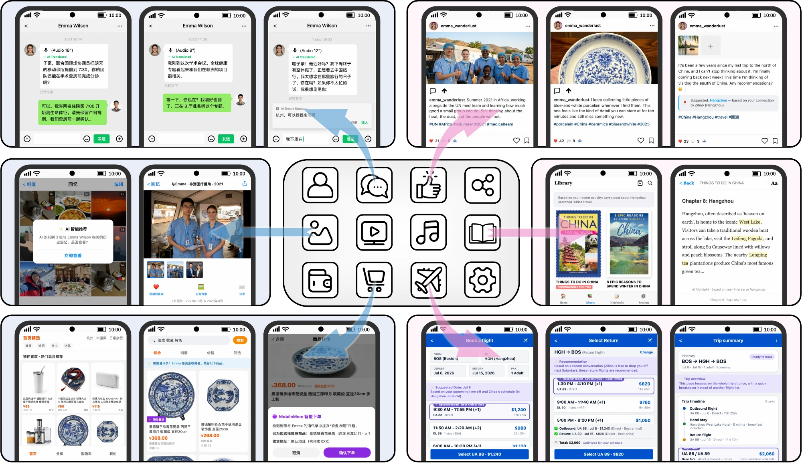

MobileMem：从一年的移动端经历中学习 MobileMem: Learning from a Year of Mobile Experiences
面向端侧长期记忆的评测基准
A benchmark for on-device long-term memory

Applications
MobileMem 的应用场景 Application Scenarios
01 健康管理与用药提醒 Health Management and Medication Reminder
一位老年用户日常记录血压和血糖，并保存历次体检报告和医生建议。过去几个月，每次复诊后，用户都会在日历中记下下次复诊时间，在笔记中记录医生调整的用药方案，通过浏览器搜索某种常用药的禁忌，并将化验报告和处方照片保存在相册中。某天清晨，用户略感头晕，打开手机询问助手：“我以前对什么药过敏？请帮我看看现在吃的药里有没有这种成分。”助手将健康记录中的过敏史与当前用药清单进行匹配，立即给出明确的风险提示。
An elderly user routinely records blood pressure and blood glucose measurements and has kept past medical examination reports and doctor's advice. Over the past few months, after each follow-up visit, the user has noted the next appointment time in Calendar, jotted down the doctor's medication adjustments in Notes, searched for contraindications of a common medication via the browser, and saved photos of lab reports and prescriptions in Photos. One early morning, feeling slightly dizzy, the user opens the phone and asks the assistant, "What medication was I allergic to before? Please check whether any of the medicines I'm currently taking contain it." By matching the allergy history in the health records with the current medication list, the assistant immediately provides a clear risk alert.
02 旅行行程规划 Travel Itinerary Planning
一位计划前往成都的游客提前浏览了大量游记和攻略，随手收藏多篇文章，并逐渐被川西环线的山水吸引。出发前一晚，用户询问助手：“根据我收藏的所有内容，成都周边两天怎么安排比较好？”助手没有泛泛推荐宽窄巷子和锦里，而是将收藏攻略的内容与用户此前搜索过的交通方式和住宿偏好整合，给出具体的两日行程：第一天从成都市区出发，经都江堰前往映秀；第二天翻越巴朗山口远眺四姑娘山，傍晚返回。
A tourist planning a trip to Chengdu has browsed numerous travelogues and guides in advance, casually bookmarking several articles, and becomes increasingly drawn to the mountains and waters along the Western Sichuan Ring Route. The night before departure, the user says to the assistant, "Based on everything I've bookmarked, what's a good two-day route around Chengdu?" Instead of generically recommending Kuanzhai Alley and Jinli, the assistant integrates the content of the bookmarked guides with the user's previously searched transportation modes and accommodation preferences, and produces a concrete two-day itinerary: departing from downtown Chengdu on the first day, passing through Dujiangyan to Yingxiu, and on the second day crossing Balang Mountain Pass to view Mount Siguniang before returning in the evening.
03 个人影视清单与追剧记录 Personal Watchlist and Drama Tracking
一位长期追剧的用户总会在笔记中写详细评论，并附上几张印象深刻的截图，久而久之积累了数百部影视作品的观后记录。今天刚看完一部新剧，用户觉得它与以前记录过的一部作品很像，却记不清细节，于是询问助手：“根据我过去的追剧记录，把和这部剧有关的内容整理出来，并写一篇对比长评。”助手不借助在线搜索，而是梳理多年间散落在笔记中的观后感，识别风格或主题相近的作品，从多个角度逐项比较，生成一篇包含观点、素材来源和个人记忆痕迹的长评。
A habitual drama watcher always writes detailed reviews in Notes, accompanied by several memorable screenshots, and has accumulated an archive of impressions covering hundreds of films and TV shows over a long period. Having just finished a new drama today, the user feels it resonates with one previously recorded but cannot recall the specifics. The user asks the assistant, "Based on my past drama tracking records, organize everything related to this one and write a comparative long review." Without resorting to online search, the assistant sifts through the fragmented impressions accumulated over the years in Notes, identifies works similar in style or theme, compares them from several angles item by item, and generates a review with opinions, source material, and traces of personal memory.
04 工作复盘与年中总结 Work Review and Mid-Year Summary
一位职场人士正在准备年中总结。过去半年中，会议无数、方案反复修改，还阅读了大量技术文章和行业资讯，但总感觉学习内容零散、难以整理。用户询问助手：“帮我复盘过去半年的工作。结合上次技术分享，梳理我主要在补哪些知识，以及工作中卡在哪里。”助手整合日历中的会议时间线和项目里程碑、文档中的报告与方案修改记录、笔记中的零散思考，以及屏幕记忆中浏览过的技术文章主题，提炼出清晰的学习轨迹，对照工作任务与实际产出，定位用户反复受阻的瓶颈，并生成结构清晰的年中复盘总结。
A working professional is preparing a mid-year summary. Over the past six months there have been countless meetings, repeatedly revised proposals, and substantial reading of technical articles and industry news, yet it feels like the learning has been diffuse and hard to organize. The user says to the assistant, "Help me review my work from the past six months. Based on the last tech sharing session, sort out what I've mainly been catching up on and where I've been stuck at work." The assistant integrates the timelines of all meetings and project milestones from Calendar, the revision histories of reports and proposals from Documents, the fragmented reflections in Notes, and the themes of technical articles browsed through screen memory, distills a clear learning trajectory, contrasts work tasks with actual output, pinpoints the bottlenecks where the user repeatedly got stuck, and generates a well-structured mid-year review summary.
05 家庭预算与订阅复盘 Household Budget and Subscription Review
一位家庭财务管理者长期保存水电账单、应用商店收据和会员续费通知，并在日历中记录重要扣款日期。制定下月预算前，用户询问助手：“最近哪些固定订阅涨价了？下个月有哪些服务会自动续费？”助手关联历次支付记录、续费通知和日历提醒，识别价格变化与重复会员，按日期整理出续费清单，并标记需要确认或取消的项目。
A household budget manager keeps utility bills, app-store receipts, and membership renewal notices, while recording important charge dates in Calendar. Before planning next month's expenses, the user asks, "Which recurring subscriptions increased recently, and what will renew next month?" The assistant links payment records, renewal notices, and calendar reminders, identifies price changes and duplicate memberships, and prepares a dated checklist of items to confirm or cancel.
Research Features
MobileMem 的特色 MobileMem Features

01 打破应用数据孤岛 Breaking Data Silos 跨应用的统一记忆层 One memory layer across applications
MobileMem 将聊天、社交媒体、照片、阅读、购物和日历等数据汇入统一的记忆层，使手机能够跨场景理解用户的关系、兴趣与上下文。
MobileMem unifies chat, social media, photos, reading, shopping, and calendar data in a shared memory layer, preserving relationships, interests, and context across scenarios.
02 从推理到记忆 From Reasoning to Remembering 下一代个人助手的核心能力 A foundation for personal assistants
因此，AI 的未来不仅在于推理，也在于记忆。
Consequently, the future of AI lies not only in reasoning but also in remembering.
03 复合记忆架构 Composite Memory Architecture 系统级记忆层与应用专属记忆 System-level and application-specific memory
相反，我们设想一种由两个互补组件构成的复合记忆架构。这两个组件可以通过标准化协议协作，形成统一的记忆生态，其能力超过各个模块的简单叠加。
Instead, we envision a composite memory architecture consisting of two complementary components. These two components can collaborate through standardized protocols, forming a unified memory ecosystem whose capability exceeds the simple aggregation of individual modules.
04 KEME 合成框架 KEME Synthesis Framework 知识锚点、用户画像与时间约束 Anchors, persona knowledge, temporal constraints
在用户画像知识和时间约束的引导下，KEME 将这些锚定会话分层组织成统一的交互流，同时随着用户经历随时间展开，逐步合成人机交互。
Guided by user persona knowledge and temporal constraints, KEME hierarchically organizes these anchored sessions into a unified interaction stream, while progressively synthesizing human-assistant interactions that naturally emerge as the user’s experiences unfold over time.
05 双场景基准 Two Benchmark Scenarios 文本 MobileMem 与多模态 MobileMem-Omni Textual MobileMem and multimodal MobileMem-Omni
这些基准共同提供了一个综合框架，用于评估记忆系统从原始移动经验中合成、组织和检索结构化知识的有效性。
Together, these benchmarks provide a comprehensive framework for assessing how effectively memory systems synthesize, organize, and retrieve structured knowledge from raw mobile experiences.
快速开始 Quick Start
文本与多模态基准的安装、构建和评测入口维护在项目仓库中。
Setup, construction, and evaluation entry points for both benchmark tracks are maintained in the project repository.
合作机构 Institutions
本工作由以下机构联合完成。
This work is jointly conducted by the following institutions.
由 OPPO 和 OpenKG 开发。
Developed by OPPO and OpenKG.